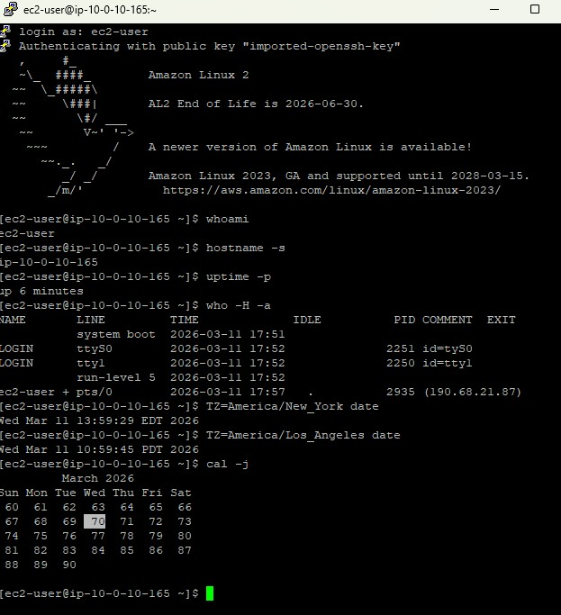
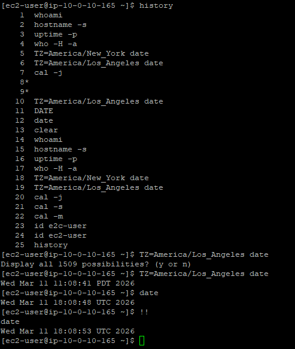

SSH Connection
Connected via PuTTY following the standard process established in Lab 225.
This lab introduces essential Linux commands for gathering system information, managing dates and calendars, and improving workflow efficiency through bash history and reverse search.
Connected to the EC2 instance via PuTTY (as described in Lab 225). Ran system information commands like whoami, hostname, uptime, and who. Explored timezone-aware date display, Julian calendars, and bash history features including reverse search (CTRL+R) and command reuse (!!).
Connected via PuTTY following the standard process established in Lab 225.
Ran commands to identify the user, hostname, uptime, logged-in users, timezones, and calendar formats.
Learned to review, search, and reuse previously executed commands from the bash history log.
Detailed record of each task performed during the lab.
whoa and pressed Tab to trigger autocomplete, which expanded
it to whoami. Pressed Enter to display the current username:
ec2-user.
hostname -s to display a shortened version of the host name.uptime -p to display how long the system has been running in a readable format.
who -H -a to display information about all logged-in users, including headers
for Name, Line, Time, Idle, PID, Comment, and Exit.TZ=America/New_York date and TZ=America/Los_Angeles date to display
the current date and time in different timezones.cal -j to display the current month's calendar using the Julian date format,
where days are numbered consecutively from the start of the year rather than restarting each month.

cal -s and cal -m to see alternate calendar views:
Sunday-start and Monday-start weeks respectively.id ec2-user to display the unique user ID (UID), group ID (GID), and group
memberships for the current user.history to display the full log of all commands executed in the current session,
numbered sequentially.TZ and pressed Tab to autocomplete and recall the previous timezone
command. This allowed editing and re-running old commands without retyping them.
date to display the current system date and time. Then ran !! to
immediately re-execute the last command (date) without retyping it.
Quick reference of all commands used in this lab and their options.
whoamiDisplays the username of the current user.
hostnameDisplays the system's host name.
-s : Show only the short hostname (without domain)uptimeShows how long the system has been running.
-p : Pretty format, human-readable output (e.g., "up 6 minutes")whoShows who is currently logged into the system.
-H : Print column headers (Name, Line, Time, etc.)-a : Show all available information (login, idle, PID, exit)dateDisplays the current date and time.
TZ=America/New_York date : Show date/time in a specific timezoneTZ=America/Los_Angeles date : Same for another timezonecalDisplays a calendar.
-j : Julian date format (days numbered from 1 to 365 across the year)-s : Week starts on Sunday-m : Week starts on MondayidDisplays user identity information.
id <username> : Shows UID, GID, and group memberships for a specific userhistoryDisplays the list of previously executed commands, numbered sequentially.
CTRL+R : Open reverse history search to find and reuse old commands!! : Re-execute the last commandTZ variable.cal.
This lab reinforced the value of knowing basic system information commands. Commands like
whoami, hostname, and uptime are often the first
steps in troubleshooting a remote server, and knowing how to quickly identify who you are,
where you are, and how long the system has been running is essential.
The history features (history, CTRL+R, !!) are
workflow accelerators that reduce repetitive typing. In real-world scenarios, reverse
search is particularly useful when recalling complex commands with long arguments that
were executed earlier in a session.